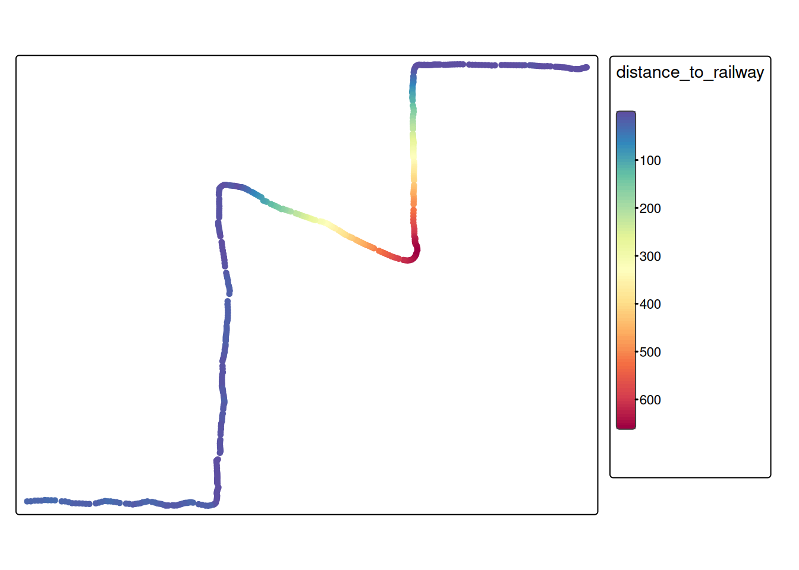

Last Week, we tried to predict travel mode using movement parameters only. This simple approach can potentially already lead to good results, however we’re missing out on information readily available: Environmental data.
Context information such as road type, train lines, bus stops etc. can provide valuable additional information for predicting travel mode.
We prepared some data from OpenStreetMap, obtained from extract.bbbike.org/. The preperation included:
Extracting highways and railway lines from the archive.
Projecting the data to WGS 84 / UTM zone 50N (EPSG:32650).
For highways: Add the column cycleway which is TRUE if the road segment includes tags related to cycling infrastructure.
Lump the multitude of categories (column highway and railwayfor the respective datasets) into the most frequent 6 and 3 categories, respectively
Note
OSM uses the term highway to mean roads in general, not specifically main roads. The column highway differentiates different types for road. See the OSMWiki for more details.
To use this context information as additional features, we first need to import our movement data:
# For illustration purposes, we will only use 500 samplestraining_dataset <-read_sf("data/week12-exercises/tracks_1.gpkg", query ="SELECT * FROM training LIMIT 500") |>mutate(data ="training")
Now we can join the movement data with the context information using various methods. A simple approach could be to use the attribute data from the nearest feature for each datapoint.
training_dataset_join <-st_join(training_dataset,highway, join = st_nearest_feature) |># Selecting these columns is for illustration purposesselect(user_id, datetime, highway, cycleway)training_dataset_join
Simple feature collection with 500 features and 4 fields
Geometry type: POINT
Dimension: XY
Bounding box: xmin: 452732.2 ymin: 4417605 xmax: 454778.1 ymax: 4419221
Projected CRS: WGS 84 / UTM zone 50N
# A tibble: 500 × 5
user_id datetime highway cycleway geom
<int> <dttm> <chr> <lgl> <POINT [m]>
1 10 2008-06-18 16:47:35 primary NA (454778.1 4419210)
2 10 2008-06-18 16:47:37 primary NA (454775 4419210)
3 10 2008-06-18 16:47:38 primary NA (454772.7 4419209)
4 10 2008-06-18 16:47:39 primary NA (454769.7 4419208)
5 10 2008-06-18 16:47:40 primary NA (454765.2 4419207)
6 10 2008-06-18 16:47:41 primary NA (454760 4419205)
7 10 2008-06-18 16:47:42 primary NA (454754.7 4419204)
8 10 2008-06-18 16:47:43 primary NA (454749.4 4419203)
9 10 2008-06-18 16:47:44 primary NA (454743.9 4419204)
10 10 2008-06-18 16:47:45 primary NA (454737.8 4419204)
# ℹ 490 more rows
For some datasets, it might make sense to calculate the distance to the closest railway line. We’ll illustrate this by using the railway data:
# First, determine the nearest railway for every moment samplenearest_railway <-st_nearest_feature(training_dataset_join, railway)# Now, we can calculate the distance to the nearest featurerailway_dist <-st_distance( training_dataset_join, railway[nearest_railway,], by_element =TRUE )# Now we can add this as a feature to our training datatraining_dataset_join$distance_to_railway <-as.numeric(railway_dist)tm_shape(training_dataset_join) +tm_dots(fill ="distance_to_railway",fill.scale =tm_scale_continuous(values ="-brewer.spectral"))

Note
In case of the example above (distance to the nearest railway), it would probably make sense to use a threshold value to differentiate close to railway vs. far from railway. In this case, we could also have just used the function st_is_within_distance().